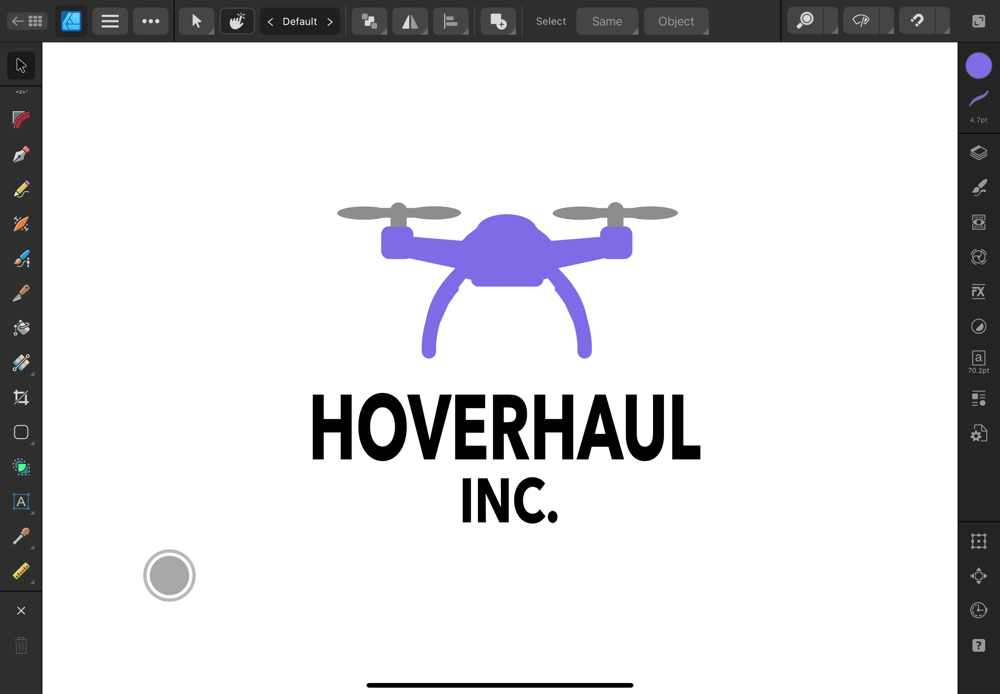
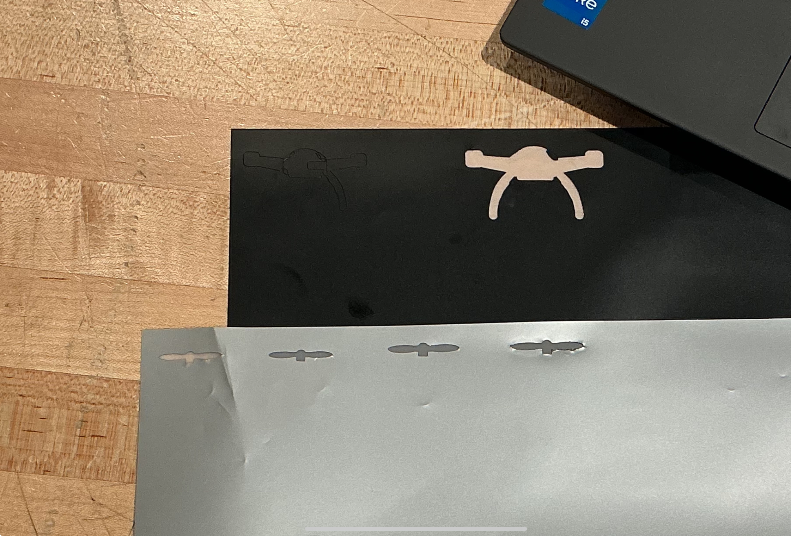

Step 1: I started by creating the logo in Designer 2, adjusting shapes and text until I was happy with the layout.

Step 2: Next, I printed the design on vinyl and carefully weeded out the extra material so only the logo remained.Step 3: Finally, I layered the vinyl pieces together and applied the finished sticker onto my iPad.